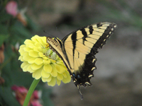

We have lots of tips we would like to share with you as you prepare your gardens this season. Remember, there is always something to be done for your gardens, no matter what the season. Our experienced staff is here to help you plan your gardens, select your plants, prepare your soil, assist you in the planting, and maintain your beds. Check out our calendar for a list of our scheduled workshops. Our next workshop is “Attracting Butterflies to Your Garden.” All workshops are free of charge and on a first-come, first-served basis! They fill up quickly, so be sure to reserve your spot early.
Seasonal Gardening Checklist
- Fall – The time to plant trees and spring-blooming bulbs. Take the time to clean the leaves and dead foliage from your beds and lawn.
- Winter – The time to prune fruit trees and finish planting your bulbs. Don’t forget to water young trees when the ground is dry.
- Spring – The time to prepare your beds, plant annuals, and apply fertilizer to established plants. Remember to mulch to maintain moisture and prevent weed growth.
- Summer – The time to supplement rainfall so that plants get one inch of water per week. Plant your vegetable garden and enjoy bountiful harvests until late fall.
Basic Gardening Tips
- Select plants according to your climate.
- In planning your garden, consider the composition, texture, structure, depth, and drainage of your soil.
- Use commpost to improve the structure of your soil.
- Choose plant foods based on your garden objectives.
- Generally, plants should receive one inch of water per week.
- Use mulch to conserve moisture, keep plants cool, and cut down on weeding.